Every screenshot this task has committed, with the numbers the audit ran on it.
These are the same files the gallery thumbnail is taken from. Generated by
tools/shotsindex.mjs from tools/work/shoot/02-dashboard.json, the report the last complete
node tools/shoot.mjs 02-dashboard run wrote. Edit the manifest, not this page.
the task · the gallery
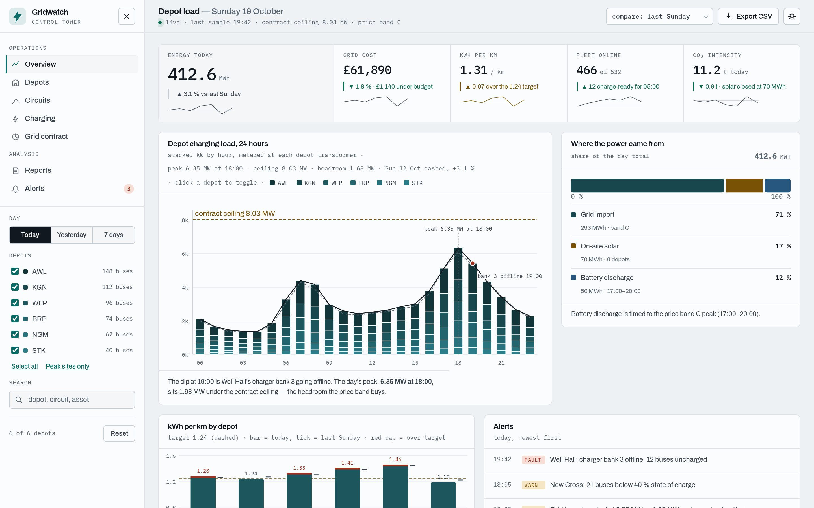
light — index.html at 1440 px viewport, 348 KB.
console0contrast0unnamed controls0img without alt0landmarks header+main+footer+nav+aside
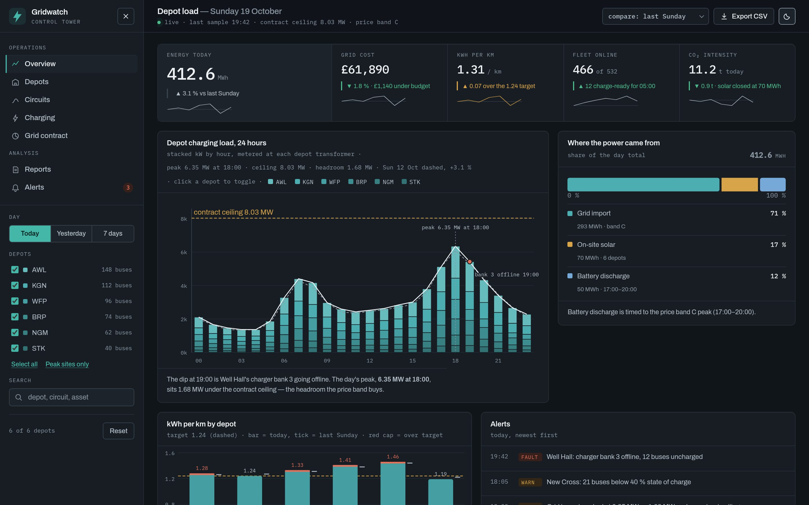
dark — index.html at 1440 px viewport, 324 KB.
console0contrast0unnamed controls0img without alt0landmarks header+main+footer+nav+aside
full — index.html at 1440 px viewport, whole page, 205 KB.
console0contrast0unnamed controls0img without alt0landmarks header+main+footer+nav+aside
dark-full — index.html at 1440 px viewport, whole page, 221 KB.
console0contrast0unnamed controls0img without alt0landmarks header+main+footer+nav+aside
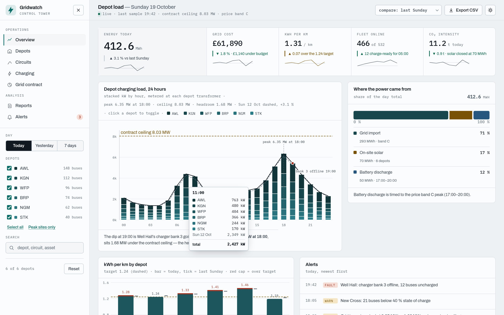
chart-hover — index.html at 1440 px viewport, 348 KB.
console0contrast0unnamed controls0img without alt0landmarks header+main+footer+nav+aside
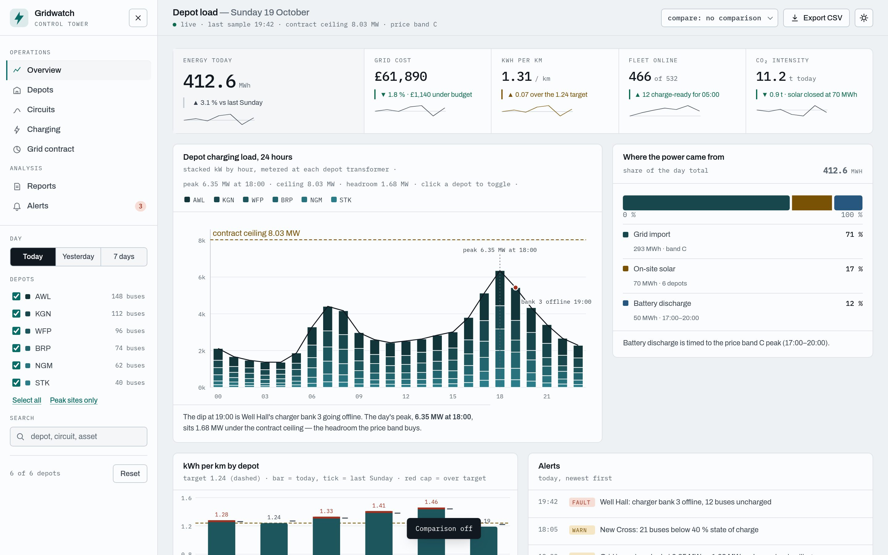
compare-off — index.html at 1440 px viewport, 346 KB.
console0contrast0unnamed controls0img without alt0landmarks header+main+footer+nav+aside
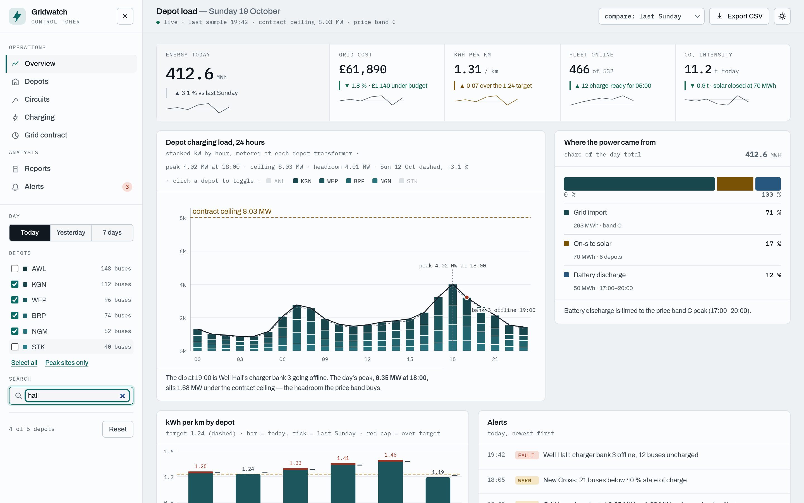
filtered — index.html at 1440 px viewport, 336 KB.
console0contrast0unnamed controls0img without alt0landmarks header+main+footer+nav+aside
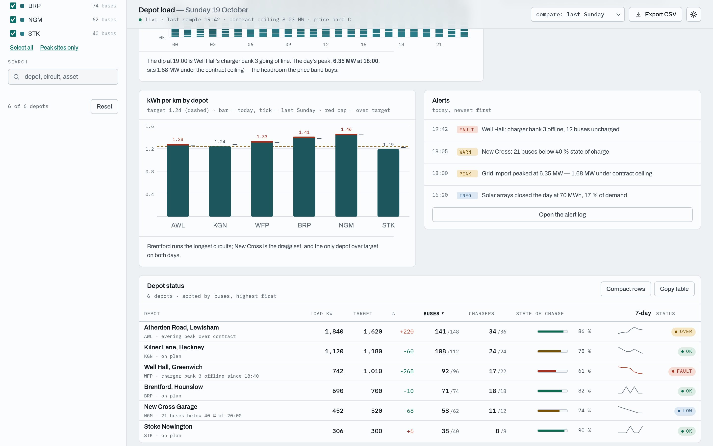
sorted-buses — index.html at 1440 px viewport, 315 KB.
console0contrast0unnamed controls0img without alt0landmarks header+main+footer+nav+aside
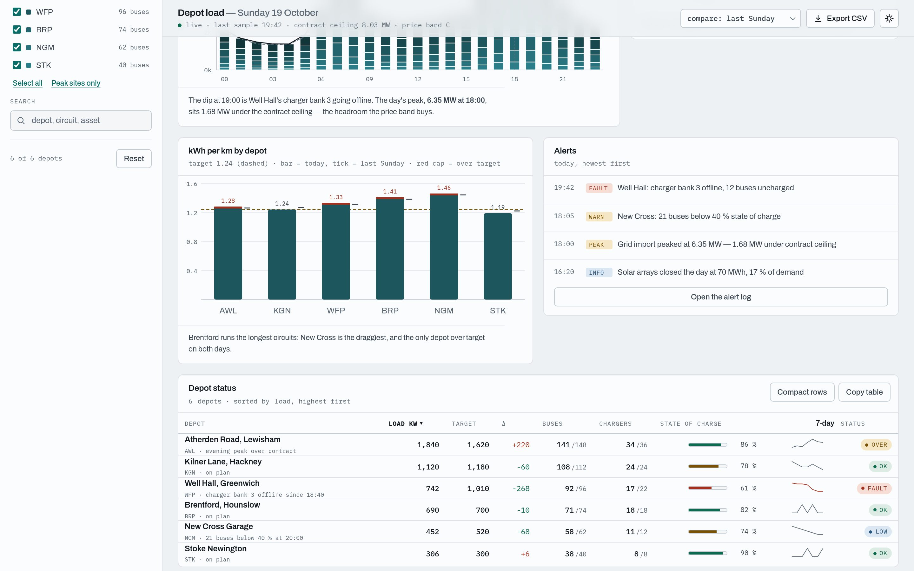
compact — index.html at 1440 px viewport, 321 KB.
console0contrast0unnamed controls0img without alt0landmarks header+main+footer+nav+aside
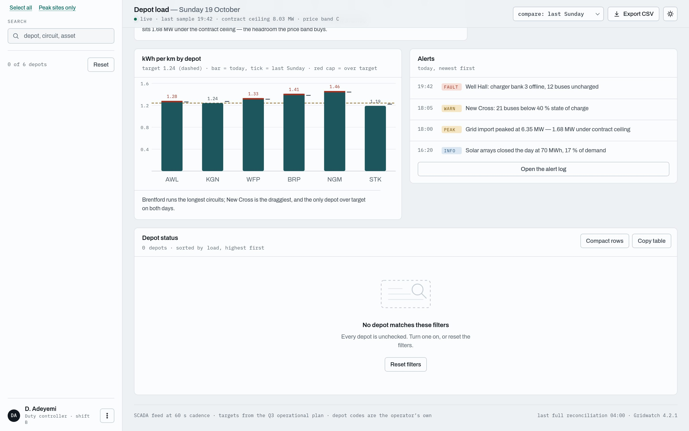
empty — index.html at 1440 px viewport, 232 KB.
console0contrast0unnamed controls0img without alt0landmarks header+main+footer+nav+aside
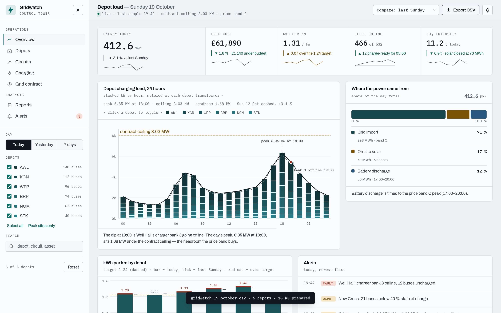
toast — index.html at 1440 px viewport, 353 KB.
console0contrast0unnamed controls0img without alt0landmarks header+main+footer+nav+aside
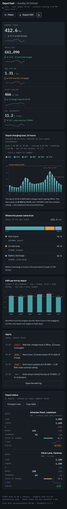
phone — index.html at 390 px viewport, whole page, 129 KB.
console0contrast0unnamed controls0img without alt0landmarks header+main+footer+nav+aside
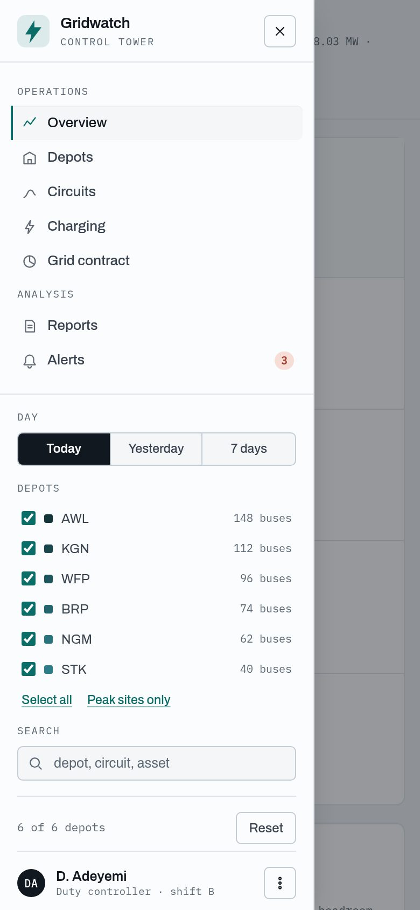
phone-drawer — index.html at 390 px viewport, 72 KB.
console0contrast0unnamed controls0img without alt0landmarks header+main+footer+nav+aside
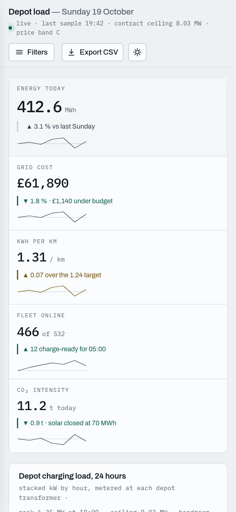
phone-top — index.html at 390 px viewport, 84 KB.
console0contrast0unnamed controls0img without alt0landmarks header+main+footer+nav+aside
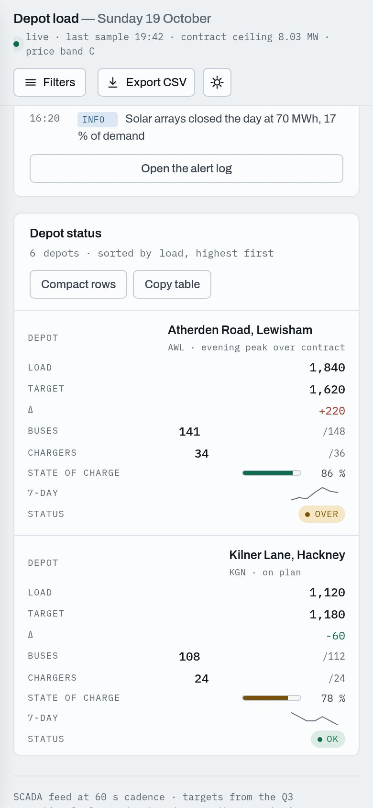
phone-table — index.html at 390 px viewport, 93 KB.
console0contrast0unnamed controls0img without alt0landmarks header+main+footer+nav+aside